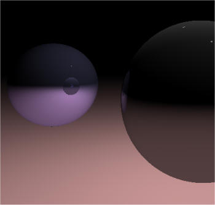
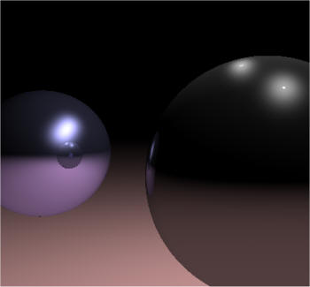

CG experiment Ⅱ: Ray tracing
Experiment introduction:
Here comes the new project.This project may be a little difficult.You have 2 choices:
1:Based on last project:Let's your sitck man move
2:Create your own scene,you can place anything in it
Choose one and use at least two different method such as Phong model, Gouraud model to complete this project.
demo:


detail:
This is my second CG project ray tracing written in C++, demonstrating a recursive ray tracing algorithm for rendering a scene.
The ray tracing algorithm works by a series of rays — representing light rays, albeit in reverse — from a given viewpoint through an image plane in a scene. When one of those rays hits an object in the scene, the color of the object at that point is used as the color of the image plane pixel the ray passed through on its way. In the project here are two models: gouraud and phong model, which combines ambient, diffuse and specular lighting components.The color is typically determined by the model.
This is implemented in the following code, which can be added to the raytracer right after the loop that calculates the diffuse illumination per light source.
float refl = prim->GetMaterial()->GetReflection();
if(refl > 0.0f)
{
vector3 N = prim->GetNormal( pi );
vector3 R = a_Ray.GetDirection() - 2.0f * DOT( a_Ray.GetDirection(), N ) * N;
if (a_Depth < TRACEDEPTH)
{
Color rcol( 0, 0, 0 );
float dist;
Raytrace( Ray( pi + R * EPSILON, R ), rcol, a_Depth + 1, a_RIndex, dist );
a_Acc += refl * rcol * prim->GetMaterial()->GetColor();
}
}
A material can have some diffuse shading, and some specular shading; and we can set the size of the highlight by tweaking the power.It's not quite right though.
The diffuse shading is OK: A diffuse material scatters light in all directions, and so its brightest spit is exactly there where the material faces the light source. Taking the dot product between the normal and a vector to the light gives this result.
Specular shading is a bit different: Basically, the specular highlight is a diffuse reflection of the light source.
Phong suggested the following lighting model, that indeed takes the reflected vector into account:
intensity = diffuse * (L.N) + specular * (V.R)n
(where L is the vector from the intersection point to the light source, N is the plane normal, V is the view direction and R is L reflected in the surface)
Notice that this formula covers both diffuse and specular lighting.
The code that implements this is shown below:
vector3 V = a_Ray.GetDirection();
vector3 R = L - 2.0f * DOT( L, N ) * N;
float dot = DOT( V, R );
if (dot > 0)
{
float spec = powf( dot, 20 ) * prim->GetMaterial()->GetSpecular() * shade;
// 添加镜面光照
a_Acc += spec * light->GetMaterial()->GetColor();
}
After adding this to the lighting calculation, the raytracer produces an image like the second one above，which is quite a great improvement